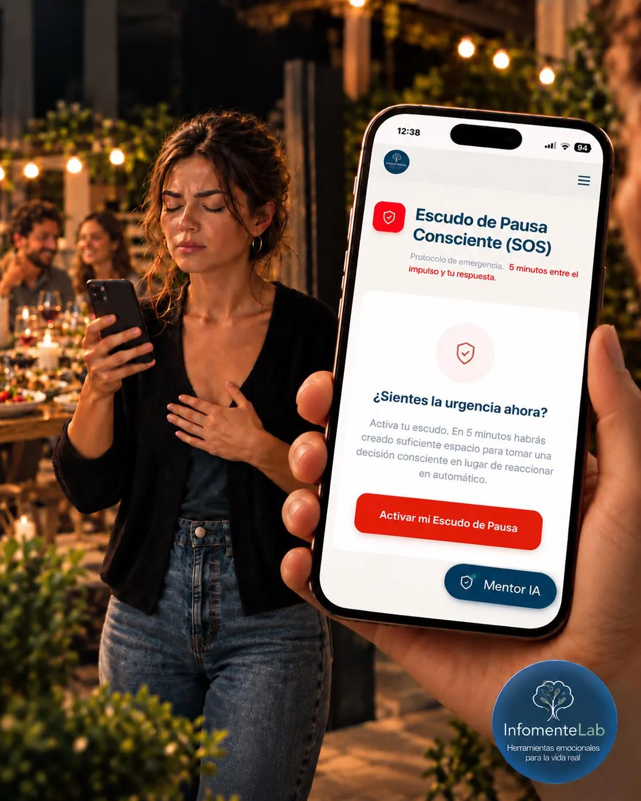
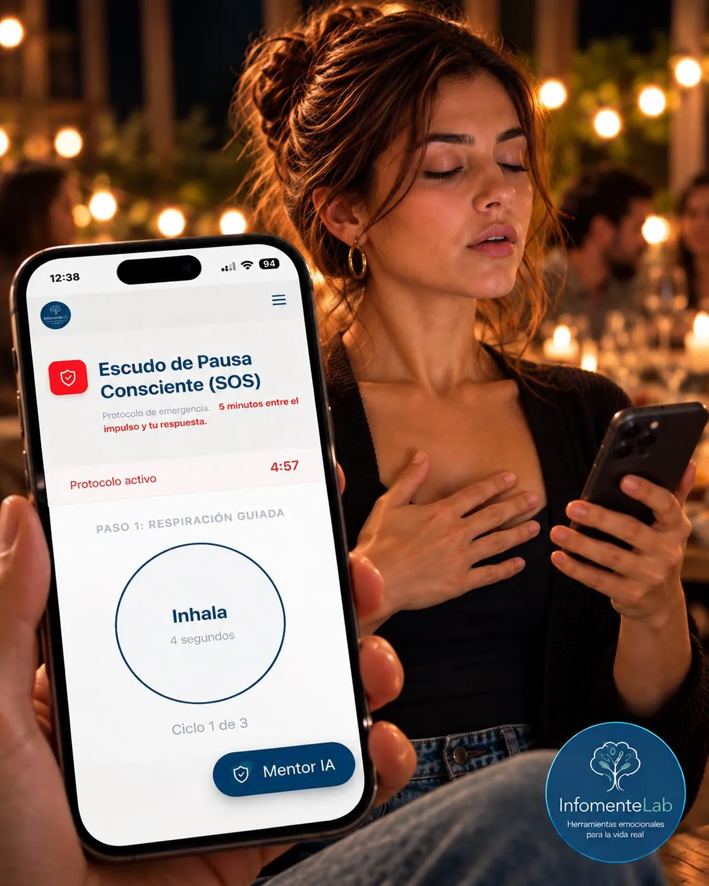
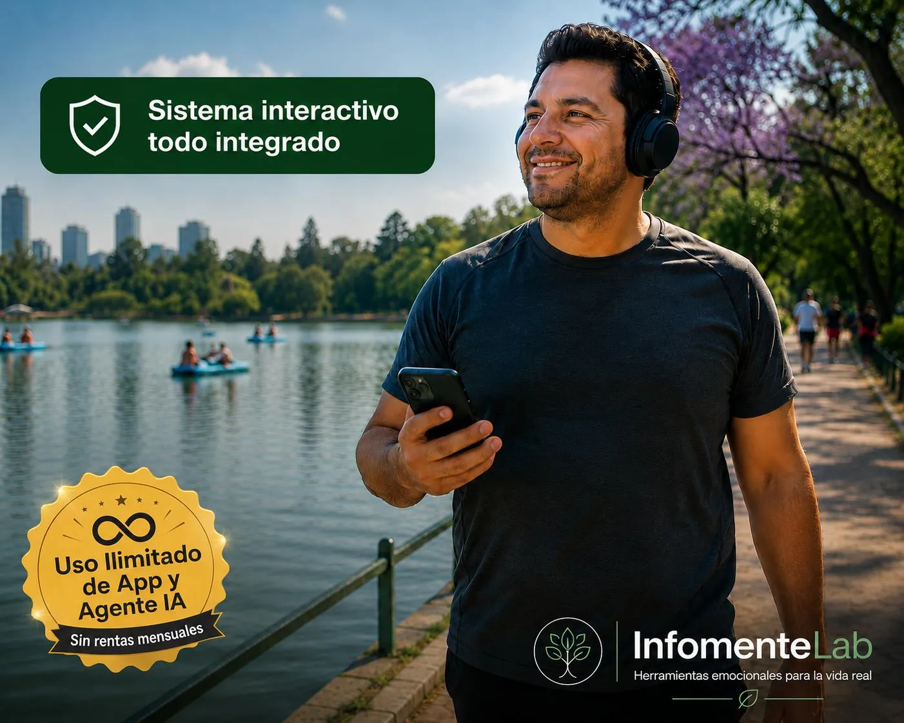
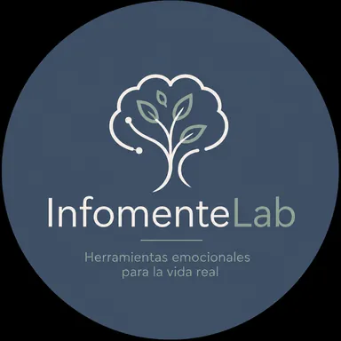

Te escondes para comer...
y el impulso te sigue venciendo
El problema no es falta de voluntad, sino el piloto automático de tu cerebro: necesitas interrumpir el ciclo en el momento exacto.
Conoce la herramienta de intervención inmediata para atravesar los primeros 90 segundos del impulso por comer.
La Comida Me Controla

Lo que pasa en tu mente antes de ceder al impulso por comer:
Te prometes que hoy será diferente. Pero terminas comiendo sin parar.
Sabes que te vas a arrepentir. Y aún así continúas comiendo lo que te hace daño.
Te autosaboteas. Cada vez que intentas controlarte para no caer en el atracón.
¿Y al final? Cada vez confías menos en tus propias decisiones.
El impulso por comer en exceso es una sensación de urgencia en tu organismo. Cuando activas el Escudo SOS en ese momento exacto, interrumpes la respuesta fisiológica y creas espacio para decidir antes de que comas sin control.
Cómo Opera el Botón SOS:
El protocolo de intervención en tiempo real:
La Pausa Fisiológica - 0 a 50 segundos
Una secuencia guiada para cortar la urgencia física en tu sistema nervioso y detener el piloto automático.
La Interrupción Mental - 50 a 90 segundos
El momento exacto donde recuperas el mando para evaluar el disparador y tomar una decisión consciente.
El Cierre del Ciclo - Hasta 5 minutos
Si el impulso persiste, el protocolo se puede repetir de forma controlada hasta que la urgencia disminuya.

Porque tienes un protocolo de intervención en tus manos a cualquier hora.
Porque es una herramienta práctica, no un PDF estático.
Porque te enseña mediante lecciones en video y podcast lo qué hay detrás de tu ansiedad.
Todo lo que incluye tu acceso a La Comida Me Controla
App Escudo SOS - Integra 6 diferentes funciones para identificar y frenar el impulso del atracón.
Mentor 24/7 - Asistente IA entrenado para acompañar tu aprendizaje y resolver cualquier duda.
Centro de Recursos de Aprendizaje: Lecciones en video y podcast para entender qué dispara en tu organismo la alimentación emocional.
Todo integrado en una App lista para usarse, respaldada por investigación y tecnología.
$ 37 USD

Preguntas Frecuentes
Es un sistema digital de intervención en tiempo real. No es un PDF estático ni un curso pasivo: concentra herramientas tácticas, recursos de aprendizaje y soporte de IA en una aplicación accesible desde el primer momento.
No. Funciona directamente desde el enlace de acceso web. Si lo deseas, puedes añadir un acceso directo tu navegador para tenerla a la mano como cualquier otra aplicación, sin ocupar espacio de almacenamiento.
No. El acceso a todo el sistema es mediante un pago único de $37 USD, con disponibilidad continua y sin rentas mensuales ni cobros ocultos.
De forma inmediata tras confirmar tu pago. Recibirás las credenciales en el correo electrónico registrado. (Si no lo visualizas en tu bandeja principal, revisa la carpeta de spam o escríbenos a contacto@infomentelab.com).
No. Es un sistema complementario de apoyo conductual y aprendizaje, no un tratamiento clínico ni un sustituto de la atención profesional especializada.
La Comida Me Controla no promete resultados automáticos ni hace el trabajo por ti. El sistema pone herramientas de aprendizaje e intervención a tu alcance, pero para aprovecharlo necesitas usar la App y utilizar activamente sus herramientas. La experiencia y los avances pueden variar de una persona a otra.
Sí. Tu compra cuenta con 7 días de garantía.

Nuestro Manifiesto
Por qué existe este sistema
En InfomenteLab diseñamos herramientas digitales con un propósito claro: convertir conocimiento útil en soluciones prácticas para la vida real, sin fórmulas milagrosas ni promesas vacías.
La Comida Me Controla nació para que recuperes el control frente a la comida, combinando tecnología, aprendizaje y recursos de intervención directa para ayudarte a entender qué ocurre en tu organismo y transformar tus respuestas ante el impulso.